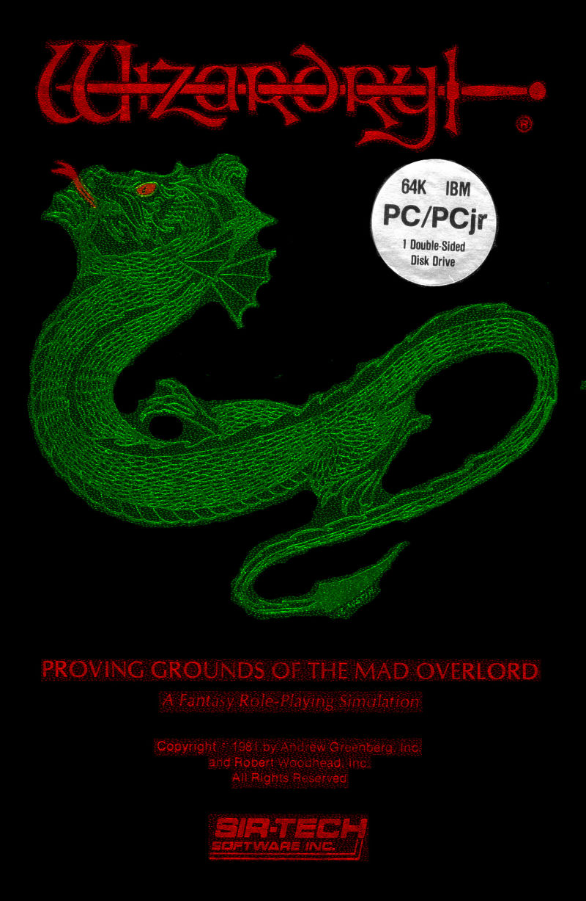

In Wizardry, players choose a party of six characters, selecting between races and classes similar to a Dungeons and Dragons scenarios. The player then explores a dungeon, fighting randomly appearing enemies in turn-based combat. Softline’s March 1982 issue describes it as the truest adaptation of Dungeons and Dragons yet.

Impact
Wizardry had quite an impact on gamers. Softline claimed it should be given the award for best game created in 1981 - a game highly addicting and innovating that was “sweeping the country”. Wizardry was the top rated game in Computer Gaming World’s 1983 game ratings for games from 1982 - 1983. It was the top ranked fantasy game in Softalk’s March 1982 top five fantasy games and ranked five in the top thirty list of the same month.
Production History
Wizardry was created in 1981. It was created by Andrew Greenberg and Robert Woodhead. Wizardry was published by Sir-tech Software, Inc.